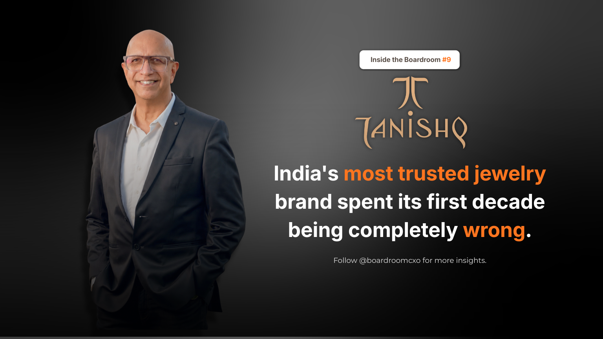

India's most trusted jewellery brand spent its first decade being wrong about India. Completely wrong.
Tanishq launched in the mid-1990s on a borrowed idea. Titan Company Limited had taught Indians to buy watches as fashion, so gold got the same treatment: Western-influenced designs, mostly 18 karat, because it was cheaper, harder, and easier to work with.
Indian buyers did not want cheaper. They wanted 22 karat, because gold here is not an accessory. It is savings, security, and a wedding promise held in metal.
The losses ran year after year.
The Fix Was Not a Redesign. It Was an Admission.
Most companies in that position would have spent more on advertising, hired a sharper design team, or waited out the market. Titan changed the answer instead. Tanishq moved to 22 karat gold, then went after the deeper problem: Indian buyers trusted no jeweller on purity, Tanishq included.
The response was a machine, not a marketing line. Tanishq put a karatmeter in its stores, an X-ray device that tested a customer's gold in front of them, on the spot. No promises. No certificates to take on faith. A number, generated while the buyer watched.
The Harder Offer
The karatmeter solved the diagnosis problem. It did not solve the switching problem, which was that most Indian households already owned gold, often inherited, often of uncertain purity, and had no reason to trust a new brand enough to start over.
Tanishq's answer was to remove the risk entirely. If a customer's old jewellery tested between 19 and 22 karats, Tanishq exchanged it for 22 karat Tanishq jewellery and charged only the making charges. The brand absorbed the gold.
Expensive. Also the only honest way to buy trust in a market that had almost none.
This is the detail most retellings of the Tanishq story skip past. It was not a clever campaign that rebuilt the brand. It was a policy that cost the company real money on every transaction, funded by a management team willing to treat trust as a balance-sheet line item rather than a slogan.
The Career Built on the Correction
C K Venkataraman ran the jewellery division from 2005, first as COO and then as CEO until 2019, and scaled the business on that corrected base. He did not inherit a working formula. He inherited a business that had already admitted its founding assumption was wrong, and spent the next decade and a half compounding the fix rather than second-guessing it.
In FY25, Titan's jewellery division reported total income above ₹46,000 crore. He retired as managing director of Titan Company Limited on 31 December 2025, after 35 years at the company. His book on Tanishq is candid about how much went wrong first, an unusual choice for an executive whose name is now closely tied to the brand's success.
Where Most Leadership Playbooks Get This Wrong
The comfortable version of this story is "Tanishq found the winning design." That undersells what actually happened. The winning design was never the issue. The issue was that an entire category, organised jewellery retail, had trained Indian consumers to expect to be shortchanged on purity, and no brand had been willing to prove otherwise at its own cost.
Founders and leadership teams tend to treat a failing strategy as a marketing problem first, a pricing problem second, and a trust problem last, if at all, because trust is the hardest one to fix and the most expensive to prove. Tanishq's turnaround worked because it inverted that order: trust first, at real cost, before anything else.
The Boardroom Read
Most leaders protect the strategy that made their career. It is the natural instinct, particularly for anyone who joined a business early and rose alongside a founding idea. Admitting that idea was wrong feels like admitting the first decade of your own work was wasted.
The best ones bury it the day it stops being true. Tanishq's early leadership did that before Venkataraman took the jewellery division, and he spent his career proving the correction could scale, not defending the version that came before it. That is the harder discipline: not spotting the mistake, but being willing to let go of it completely, in public, at real cost, and rebuild on what the market was actually telling you.
Frequently Asked Questions
Why did Tanishq struggle in its first decade?
Tanishq launched in the mid-1990s on the assumption that Indians would buy gold the way Titan had taught them to buy watches, as Western-influenced fashion, mostly in 18 karat because it was cheaper and easier to work with. Indian gold buyers wanted 22 karat, because gold in India functions as savings, security, and a wedding promise, not an accessory. That mismatch produced losses for years.
What is a karatmeter and why did Tanishq introduce one?
A karatmeter is an X-ray based machine that tests the purity of gold jewellery on the spot, in front of the customer. Tanishq installed them in stores because the real problem holding back Indian jewellery buyers was not design, it was that almost no jeweller in the market could be trusted on purity. The karatmeter turned an invisible trust problem into a visible, verifiable one.
What was Tanishq's gold exchange offer?
If a customer's old jewellery tested between 19 and 22 karats, Tanishq exchanged it for new 22 karat Tanishq jewellery and charged only the making charges, absorbing the gold purity gap itself. It was an expensive policy, but it was the most direct way to buy trust in a market where most buyers had been shortchanged on purity for generations.
Who is C K Venkataraman and what was his role at Tanishq?
C K Venkataraman ran Titan's jewellery division starting in 2005, first as COO and then as CEO until 2019, scaling Tanishq on the corrected 22 karat, trust-first foundation. He went on to become managing director of Titan Company Limited, retiring on 31 December 2025 after 35 years with the company.
How large is Titan's jewellery business today?
In FY25, Titan's jewellery division, which includes Tanishq, reported total income above ₹46,000 crore, making it the dominant engine of Titan Company's overall revenue and one of the largest organised jewellery businesses in India.
What is the leadership lesson from Tanishq's turnaround?
Most leaders protect the strategy that made their career. The Tanishq team, and C K Venkataraman after them, did the opposite: they abandoned the founding design philosophy the moment the market proved it wrong, and rebuilt the business around what Indian gold buyers actually valued, purity and trust, ahead of Western design cues.
Related Reading
Everyone Said Royal Enfield Was Finished. Siddhartha Lal Asked for Two Years.
Read → R · 02 Founder Leadership · August 2026Ramesh Chauhan Sold Thums Up to Build Bisleri From Scratch
Read → R · 03 Founder Leadership · July 2026Suresh Narayanan: The MD Who Walked Into the Maggi Ban
Read →Scaling a jewellery or D2C brand past its first correction?
The leaders who fix a business after a founding mistake are rarely the same profile who launched it. We place the operators who can rebuild trust with a category, not just defend a design brief.
Brief Us on a Mandate